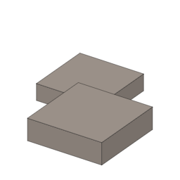

説明
①子ども 焼き物を作る回転台。車輪より先にあった。回しながら作ると、少ない粘土でうすい土器ができる。
②学生 石3＋紡錘（棒だけ）＋板材3で作る。粘土玉を持って右クリックすると、粘土玉3つで生の土器が1つできる（作業台で手で作ると5つ要る）。
③大人 重い円盤は、一度回すと回り続ける（はずみ車、[0-07] 紡錘車と同じしくみ）。回る粘土に指を当てるだけで、まわり全部が同じ厚さにそろい、うすく高い壁を引き上げられる。手でひもを積み上げるより、粘土も時間も少なくて済む。
④ガチ いちばん古いろくろは、ウクライナのククテニ・トリピリア文化の紀元前4500年ごろとされる ⚠️。西アジアではゆっくり回す回転台が紀元前3500年ごろ、足でけって速く回すろくろ（はずみ車の原理）は紀元前3千年紀。日本には5世紀ごろ、須恵器とともに朝鮮半島から伝わった。
作り方
使い道
（このアイテムを使うレシピは無い）